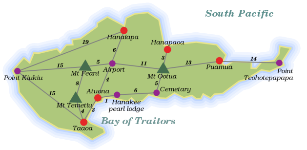

10. Searching¶
This chapter does not introduce any new JavaScript-specific concepts. Instead, we will go through the solution to two problems, discussing some interesting algorithms and techniques along the way. If this does not sound interesting to you, it is safe to skip to the next chapter.
Let me introduce our first problem. Take a look at this map. It shows Hiva Oa, a small tropical island in the Pacific Ocean.
The gray lines are roads, and the numbers next to them are the lengths of these roads. Imagine we need a program that finds the shortest route between two points on Hiva Oa. How could we approach that? Think about this for a moment.
No really. Don’t just steamroll on to the next paragraph. Try to seriously think of some ways you could do this, and consider the issues you would come up against. When reading a technical book, it is way too easy to just zoom over the text, nod solemnly, and promptly forget what you have read. If you make a sincere effort to solve a problem, it becomes your problem, and its solution will be more meaningful.
The first aspect of this problem is, again, representing our data. The information in the picture does not mean much to our computer. We could try writing a program that looks at the map and extracts the information in it... but that can get complicated. If we had twenty-thousand maps to interpret, this would be a good idea, in this case we will do the interpretation ourself and transcribe the map into a more computer-friendly format.
What does our program need to know? It has to be able to look up which locations are connected, and how long the roads between them are. The places and roads on the island form a graph, as mathematicians call it. There are many ways to store graphs. A simple possibility is to just store an array of road objects, each of which contains properties naming its two endpoints and its length...
var roads = [{point1: "Point Kiukiu", point2: "Hanaiapa", length: 19},
{point1: "Point Kiukiu", point2: "Mt Feani", length: 15}
/* and so on */];
However, it turns out that the program, as it is working out a route, will very often need to get a list of all the roads that start at a certain location, like a person standing on a crossroads will look at a signpost and read “Hanaiapa: 19km, Mount Feani: 15km”. It would be nice if this was easy (and quick) to do.
With the representation given above, we have to sift through the whole list of roads, picking out the relevant ones, every time we want this signpost list. A better approach would be to store this list directly. For example, use an object that associates place-names with signpost lists:
var roads = {"Point Kiukiu": [{to: "Hanaiapa", distance: 19},
{to: "Mt Feani", distance: 15},
{to: "Taaoa", distance: 15}],
"Taaoa": [/* et cetera */]};
When we have this object, getting the roads that leave from Point Kiukiu is just a matter of looking at roads["Point Kiukiu"].
However, this new representation does contain duplicate information: The road between A and B is listed both under A and under B. The first representation was already a lot of work to type in, this one is even worse.
Fortunately, we have at our command the computer’s talent for repetitive work. We can specify the roads once, and have the correct data structure be generated by the computer. First, initialise an empty object called roads, and write a function makeRoad:
var roads = {};
function makeRoad(from, to, length) {
function addRoad(from, to) {
if (!(from in roads))
roads[from] = [];
roads[from].push({to: to, distance: length});
}
addRoad(from, to);
addRoad(to, from);
}
Nice, huh? Notice how the inner function, addRoad, uses the same names (from, to) for its parameters as the outer function. These will not interfere: inside addRoad they refer to addRoad‘s parameters, and outside it they refer to makeRoad‘s parameters.
The if statement in addRoad makes sure that there is an array of destinations associated with the location named by from, if there isn’t already one it puts in an empty array. This way, the next line can assume there is such an array and safely push the new road onto it.
Now the map information looks like this:
makeRoad("Point Kiukiu", "Hanaiapa", 19);
makeRoad("Point Kiukiu", "Mt Feani", 15);
makeRoad("Point Kiukiu", "Taaoa", 15);
// ...
We managed to considerably shorten our description of the road-information by defining some convenient operations. You could say we expressed the information more succinctly by expanding our vocabulary. Defining a ‘little language’ like this is often a very powerful technique ― when, at any time, you find yourself writing repetitive or redundant code, stop and try to come up with a vocabulary that makes it shorter and denser.
Redundant code is not only a bore to write, it is also error-prone, people pay less attention when doing something that doesn’t require them to think. On top of that, repetitive code is hard to change, because structure that is repeated a hundred times has to be changed a hundred times when it turns out to be incorrect or suboptimal.
If you ran all the pieces of code above, you should now have a variable named roads that contains all the roads on the island. When we need the roads starting from a certain place, we could just do roads[place]. But then, when someone makes a typo in a place name, which is not unlikely with these names, he will get undefined instead of the array he expects, and strange errors will follow. Instead, we will use a function that retrieves the road arrays, and yells at us when we give it an unknown place name:
function roadsFrom(place) {
var found = roads[place];
if (found == undefined)
throw new Error("No place named '" + place + "' found.");
else
return found;
}
alert(roadsFrom("Puamua"));
Here is a first stab at a path-finding algorithm, the gambler’s method:
function gamblerPath(from, to) {
function randomInteger(below) {
return Math.floor(Math.random() * below);
}
function randomDirection(from) {
var options = roadsFrom(from);
return options[randomInteger(options.length)].to;
}
var path = [];
while (true) {
path.push(from);
if (from == to)
break;
from = randomDirection(from);
}
return path;
}
alert(gamblerPath("Hanaiapa", "Mt Feani"));
At every split in the road, the gambler rolls his dice to decide which road he shall take. If the dice sends him back the way he came, so be it. Sooner or later, he will arrive at his destination, since all places on the island are connected by roads.
The most confusing line is probably the one containing Math.random. This function returns a pseudo-random number between 0 and 1. Try calling it a few times from the console, it will (most likely) give you a different number every time. The function randomInteger multiplies this number by the argument it is given, and rounds the result down with Math.floor. Thus, for example, randomInteger(3) will produce the number 0, 1, or 2.
Note
Computers are deterministic machines: They always react in the same way to the input they receive, so they can not produce truly random values. Therefore, we have to make do with series of numbers that look random, but are in fact the result of some complicated deterministic computation.
The gambler’s method is the way to go for those who abhor structure and planning, who desperately search for adventure. We set out to write a program that could find the shortest route between places though, so something else will be needed.
A very straightforward approach to solving such a problem is called “generate and test”. It goes like this:
- Generate all possible routes.
- In this set, find the shortest one that actually connects the start point to the end point.
Step two is not hard. Step one is a little problematic. If you allow routes with circles in them, there is an infinite amount of routes. Of course, routes with circles in them are unlikely to be the shortest route to anywhere, and routes that do not start at the start point do not have to be considered either. For a small graph like Hiva Oa, it should be possible to generate all non-cyclic (circle-free) routes starting from a certain point.
But first, we will need some new tools. The first is a function named member, which is used to determine whether an element is found within an array. The route will be kept as an array of names, and when arriving at a new place, the algorithm calls member to check whether we have been at that place already. It could look like this:
function member(array, value) {
var found = false;
forEach(array, function(element) {
if (element === value)
found = true;
});
return found;
}
alert(member([6, 7, "Bordeaux"], 7));
However, this will go over the whole array, even if the value is found immediately at the first position. What wastefulness. When using a for loop, you can use the break statement to jump out of it, but in a forEach construct this will not work, because the body of the loop is a function, and break statements do not jump out of functions. One solution could be to adjust forEach to recognise a certain kind of exceptions as signalling a break.
var Break = {toString: function() {return "Break";}};
function forEach(array, action) {
try {
for (var i = 0; i < array.length; i++)
action(array[i]);
}
catch (exception) {
if (exception != Break)
throw exception;
}
}
Now, if the action function throws Break, forEach will absorb the exception and stop looping. The object stored in the variable Break is used purely as a thing to compare with. The only reason I gave it a toString property is that this might be useful to figure out what kind of strange value you are dealing with if you somehow end up with a Break exception outside of a forEach.
Having a way to break out of forEach loops can be very useful, but in the case of the member function the result is still rather ugly, because you need to specifically store the result and later return it. We could add yet another kind of exception, Return, which can be given a value property, and have forEach return this value when such an exception is thrown, but this would be terribly ad-hoc and messy. What we really need is a whole new higher-order function, called any (or sometimes some). It looks like this:
function any(test, array) {
for (var i = 0; i < array.length; i++) {
var found = test(array[i]);
if (found)
return found;
}
return false;
}
function member(array, value) {
return any(partial(op["==="], value), array);
}
alert(member(["Fear", "Loathing"], "Denial"));
any goes over the elements in an array, from left to right, and applies the test function to them. The first time this returns a true-ish value, it returns that value. If no true-ish value is found, false is returned. Calling any(test, array) is more or less equivalent to doing test(array[0]) || test(array[1]) || ... etcetera.
Just like && is the companion of ||, any has a companion called every:
function every(test, array) {
for (var i = 0; i < array.length; i++) {
var found = test(array[i]);
if (!found)
return found;
}
return true;
}
alert(every(partial(op["!="], 0), [1, 2, -1]));
Another function we will need is flatten. This function takes an array of arrays, and puts the elements of the arrays together in one big array.
function flatten(arrays) {
var result = [];
forEach(arrays, function (array) {
forEach(array, function (element){result.push(element);});
});
return result;
}
The same could have been done using the concat method and some kind of reduce, but this would be less efficient. Just like repeatedly concatenating strings together is slower than putting them into an array and then calling join, repeatedly concatenating arrays produces a lot of unnecessary intermediary array values.
Imagine what an algorithm to generate routes would look like ― it starts at the starting location, and starts to generate a route for every road leaving there. At the end of each of these roads it continues to generate more routes. It doesn’t run along one road, it branches out. Because of this, recursion is a natural way to model it.
function possibleRoutes(from, to) {
function findRoutes(route) {
function notVisited(road) {
return !member(route.places, road.to);
}
function continueRoute(road) {
return findRoutes({places: route.places.concat([road.to]),
length: route.length + road.distance});
}
var end = route.places[route.places.length - 1];
if (end == to)
return [route];
else
return flatten(map(continueRoute, filter(notVisited,
roadsFrom(end))));
}
return findRoutes({places: [from], length: 0});
}
alert(possibleRoutes("Point Teohotepapapa", "Point Kiukiu").length);
alert(possibleRoutes("Hanapaoa", "Mt Ootua"));
The function returns an array of route objects, each of which contains an array of places that the route passes, and a length. findRoutes recursively continues a route, returning an array with every possible extension of that route. When the end of a route is the place where we want to go, it just returns that route, since continuing past that place would be pointless. If it is another place, we must go on. The flatten/map/filter line is probably the hardest to read. This is what it says: “Take all the roads going from the current location, discard the ones that go to places that this route has already visited. Continue each of these roads, which will give an array of finished routes for each of them, then put all these routes into a single big array that we return.”
That line does a lot. This is why good abstractions help: They allow you to say complicated things without typing screenfulls of code.
Doesn’t this recurse forever, seeing how it keeps calling itself (via continueRoute)? No, at some point, all outgoing roads will go to places that a route has already passed, and the result of filter will be an empty array. Mapping over an empty array produces an empty array, and flattening that still gives an empty array. So calling findRoutes on a dead end produces an empty array, meaning ‘there are no ways to continue this route’.
Notice that places are appended to routes by using concat, not push. The concat method creates a new array, while push modifies the existing array. Because the function might branch off several routes from a single partial route, we must not modify the array that represents the original route, because it must be used several times.
Let us see what route our algorithm comes up with between Point Kiukiu and Point Teohotepapapa...
alert(shortestRoute("Point Kiukiu", "Point Teohotepapapa").places);
On a small island like Hiva Oa, it is not too much work to generate all possible routes. If you try to do that on a reasonably detailed map of, say, Belgium, it is going to take an absurdly long time, not to mention an absurd amount of memory. Still, you have probably seen those online route-planners. These give you a more or less optimal route through a gigantic maze of roads in just a few seconds. How do they do it?
If you are paying attention, you may have noticed that it is not necessary to generate all routes all the way to the end. If we start comparing routes while we are building them, we can avoid building this big set of routes, and, as soon as we have found a single route to our destination, we can stop extending routes that are already longer than that route.
To try this out, we will use a 20 by 20 grid as our map:

What you see here is an elevation map of a mountain landscape. The yellow spots are the peaks, and the blue spots the valleys. The area is divided into squares with a size of a hundred meters. We have at our disposal a function heightAt, which can give us the height, in meters, of any square on that map, where squares are represented by objects with x and y properties.
alert(heightAt({x: 0, y: 0}));
alert(heightAt({x: 11, y: 18}));
We want to cross this landscape, on foot, from the top left to the bottom right. A grid can be approached like a graph. Every square is a node, which is connected to the squares around it.
We do not like wasting energy, so we would prefer to take the easiest route possible. Going uphill is heavier than going downhill, and going downhill is heavier than going (No really, it is). This function calculates the amount of “weighted meters”, between two adjacent squares, which represents how tired you get from walking (or climbing) between them. Going uphill is counted as twice as heavy as going downhill.
function weightedDistance(pointA, pointB) {
var heightDifference = heightAt(pointB) - heightAt(pointA);
var climbFactor = (heightDifference < 0 ? 1 : 2);
var flatDistance = (pointA.x == pointB.x || pointA.y == pointB.y ? 100 : 141);
return flatDistance + climbFactor * Math.abs(heightDifference);
}
Note the flatDistance calculation. If the two points are on the same row or column, they are right next to each other, and the distance between them is a hundred meters. Otherwise, they are assumed to be diagonally adjacent, and the diagonal distance between two squares of this size is a hundred times the square root of two, which is approximately 141. One is not allowed to call this function for squares that are further than one step apart. (It could double-check this... but it is too lazy.)
Points on the map are represented by objects containing x and y properties. These three functions are useful when working with such objects:
function point(x, y) {
return {x: x, y: y};
}
function addPoints(a, b) {
return point(a.x + b.x, a.y + b.y);
}
function samePoint(a, b) {
return a.x == b.x && a.y == b.y;
}
alert(samePoint(addPoints(point(10, 10), point(4, -2)),
point(14, 8)));
To find a route on this map without having our browser cut off the program because it takes too long to finish, we have to stop our amateurish attempts and implement a serious algorithm. A lot of work has gone into problems like this in the past, and many solutions have been designed (some brilliant, others useless). A very popular and efficient one is called A* (pronounced A-star). We will spend the rest of the chapter implementing an A* route-finding function for our map.
Before I get to the algorithm itself, let me tell you a bit more about the problem it solves. The trouble with searching routes through graphs is that, in big graphs, there are an awful lot of them. Our Hiva Oa path-finder showed that, when the graph is small, all we needed to do was to make sure our paths didn’t revisit points they had already passed. On our new map, this is not enough anymore.
The fundamental problem is that there is too much room for going in the wrong direction. Unless we somehow manage to steer our exploration of paths towards the goal, a choice we make for continuing a given path is more likely to go in the wrong direction than in the right direction. If you keep generating paths like that, you end up with an enormous amount of paths, and even if one of them accidentally reaches the end point, you do not know whether that is the shortest path.
So what you want to do is explore directions that are likely to get you to the end point first. On a grid like our map, you can get a rough estimate of how good a path is by checking how long it is and how close its end is to the end point. By adding path length and an estimate of the distance it still has to go, you can get a rough idea of which paths are promising. If you extend promising paths first, you are less likely to waste time on useless ones.
But that still is not enough. If our map was of a perfectly flat plane, the path that looked promising would almost always be the best one, and we could use the above method to walk right to our goal. But we have valleys and hillsides blocking our paths, so it is hard to tell in advance which direction will be the most efficient path. Because of this, we still end up having to explore way too many paths.
To correct this, we can make clever use of the fact that we are constantly exploring the most promising path first. Once we have determined that path A is the best way to get to point X, we can remember that. When, later on, path B also gets to point X, we know that it is not the best route, so we do not have to explore it further. This can prevent our program from building a lot of pointless paths.
The algorithm, then, goes something like this...
There are two pieces of data to keep track of. The first one is called the open list, it contains the partial routes that must still be explored. Each route has a score, which is calculated by adding its length to its estimated distance from the goal. This estimate must always be optimistic, it should never overestimate the distance. The second is a set of nodes that we have seen, together with the shortest partial route that got us there. This one we will call the reached list. We start by adding a route that contains only the starting node to the open list, and recording it in the reached list.
Then, as long as there are any nodes in the open list, we take out the one that has the lowest (best) score, and find the ways in which it can be continued (by calling possibleDirections). For each of the nodes this returns, we create a new route by appending it to our original route, and adjusting the length of the route using weightedDistance. The endpoint of each of these new routes is then looked up in the reached list.
If the node is not in the reached list yet, it means we have not seen it before, and we add the new route to the open list and record it in the reached list. If we had seen it before, we compare the score of the new route to the score of the route in the reached list. If the new route is shorter, we replace the existing route with the new one. Otherwise, we discard the new route, since we have already seen a better way to get to that point.
We continue doing this until the route we fetch from the open list ends at the goal node, in which case we have found our route, or until the open list is empty, in which case we have found out that there is no route. In our case the map contains no unsurmountable obstacles, so there is always a route.
How do we know that the first full route that we get from the open list is also the shortest one? This is a result of the fact that we only look at a route when it has the lowest score. The score of a route is its actual length plus an optimistic estimate of the remaining length. This means that if a route has the lowest score in the open list, it is always the best route to its current endpoint ― it is impossible for another route to later find a better way to that point, because if it were better, its score would have been lower.
Try not to get frustrated when the fine points of why this works are still eluding you. When thinking about algorithms like this, having seen ‘something like it’ before helps a lot, it gives you a point of reference to compare the approach to. Beginning programmers have to do without such a point of reference, which makes it rather easy to get lost. Just realise that this is advanced stuff, globally read over the rest of the chapter, and come back to it later when you feel like a challenge.
I am afraid that, for one aspect of the algorithm, I’m going to have to invoke magic again. The open list needs to be able to hold a large amount of routes, and to quickly find the route with the lowest score among them. Storing them in a normal array, and searching through this array every time, is way too slow, so I give you a data structure called a binary heap. You create them with new, just like Date objects, giving them a function that is used to ‘score’ its elements as argument. The resulting object has the methods push and pop, just like an array, but pop always gives you the element with the lowest score, instead of the one that was pushed last.
function identity(x) {
return x;
}
var heap = new BinaryHeap(identity);
forEach([2, 4, 5, 1, 6, 3], function(number) {
heap.push(number);
});
while (heap.size() > 0)
alert(heap.pop());
Appendix B: Binary Heaps discusses the implementation of this data structure, which is quite interesting. After you have read Object-oriented Programming, you might want to take a look at it.
The need to squeeze out as much efficiency as we can has another effect. The Hiva Oa algorithm used arrays of locations to store routes, and copied them with the concat method when it extended them. This time, we can not afford to copy arrays, since we will be exploring lots and lots of routes. Instead, we use a “chain” of objects to store a route. Every object in the chain has some properties, such as a point on the map, and the length of the route so far, and it also has a property that points at the previous object in the chain. Something like this:

Where the cyan circles are the relevant objects, and the lines represent properties ― the end with the dot points at the value of the property. Object A is the start of a route here. Object B is used to build a new route, which continues from A. It has a property, which we will call from, pointing at the route it is based on. When we need to reconstruct a route later, we can follow these properties to find all the points that the route passed. Note that object B is part of two routes, one that ends in D and one that ends in E. When there are a lot of routes, this can save us much storage space ― every new route only needs one new object for itself, the rest is shared with other routes that started the same way.
Defining a type of data structure by providing a set of functions to create and manipulate such structures is a useful technique. It makes it possible to ‘isolate’ the code that makes use of the structure from the details of the structure itself. Note that, no matter which of the above two implementations is used, code that needs a reached list works in exactly the same way. It doesn’t care what kind of objects are used, as long as it gets the results it expected.
This will be discussed in much more detail in Object-oriented Programming, where we will learn to make object types like BinaryHeap, which are created using new and have methods to manipulate them.
Here we finally have the actual path-finding function:
function findRoute(from, to) {
var open = new BinaryHeap(routeScore);
var reached = makeReachedList();
function routeScore(route) {
if (route.score == undefined)
route.score = estimatedDistance(route.point, to) +
route.length;
return route.score;
}
function addOpenRoute(route) {
open.push(route);
storeReached(reached, route.point, route);
}
addOpenRoute({point: from, length: 0});
while (open.size() > 0) {
var route = open.pop();
if (samePoint(route.point, to))
return route;
forEach(possibleDirections(route.point), function(direction) {
var known = findReached(reached, direction);
var newLength = route.length +
weightedDistance(route.point, direction);
if (!known || known.length > newLength) {
if (known)
open.remove(known);
addOpenRoute({point: direction,
from: route,
length: newLength});
}
});
}
return null;
}
First, it creates the data structures it needs, one open list and one reached list. routeScore is the scoring function given to the binary heap. Note how it stores its result in the route object, to prevent having to re-calculate it multiple times.
addOpenRoute is a convenience function that adds a new route to both the open list and the reached list. It is immediately used to add the start of the route. Note that route objects always have the properties point, which holds the point at the end of the route, and length, which holds the current length of the route. Routes which are more than one square long also have a from property, which points at their predecessors.
The while loop, as was described in the algorithm, keeps taking the lowest-scoring route from the open list and checks whether this gets us to the goal point. If it does not, we must continue by expanding it. This is what the forEach takes care of. It looks up this new point in the reached list. If it is not found there, or the node found has a longer length that the new route, a new route object is created and added to the open list and reached list, and the existing route (if any) is removed from the open list.
What if the route in known is not on the open list? It has to be, because routes are only removed from the open list when they have been found to be the most optimal route to their endpoint. If we try to remove a value from a binary heap that is not on it, it will throw an exception, so if my reasoning is wrong, we will probably see an exception when running the function.
When code gets complex enough to make you doubt certain things about it, it is a good idea to add some checks that raise exceptions when something goes wrong. That way, you know that there are no weird things happening ‘silently’, and when you break something, you immediately see what you broke.
Note that this algorithm does not use recursion, but still manages to explore all those branches. The open list more or less takes over the role that the function call stack played in the recursive solution to the Hiva Oa problem ― it keeps track of the paths that still have to be explored. Every recursive algorithm can be rewritten in a non-recursive way by using a data structure to store the “things that must still be done”.
Well, let us try our path-finder:
var route = findRoute(point(0, 0), point(19, 19));
If you ran all the code above, and did not introduce any errors, that call, though it might take a few seconds to run, should give us a route object. This object is rather hard to read. That can be helped by using the showRoute function which, if your console is big enough, will show a route on a map.
showRoute(route);
You can also pass multiple routes to showRoute, which can be useful when you are, for example, trying to plan a scenic route, which must include the beautiful viewpoint at 11, 17.
showRoute(findRoute(point(0, 0), point(11, 17)),
findRoute(point(11, 17), point(19, 19)));
Variations on the theme of searching an optimal route through a graph can be applied to many problems, many of which are not at all related to finding a physical path. For example, a program that needs to solve a puzzle of fitting a number of blocks into a limited space could do this by exploring the various “paths” it gets by trying to put a certain block in a certain place. The paths that ends up with insufficient room for the last blocks are dead ends, and the path that manages to fit in all blocks is the solution.